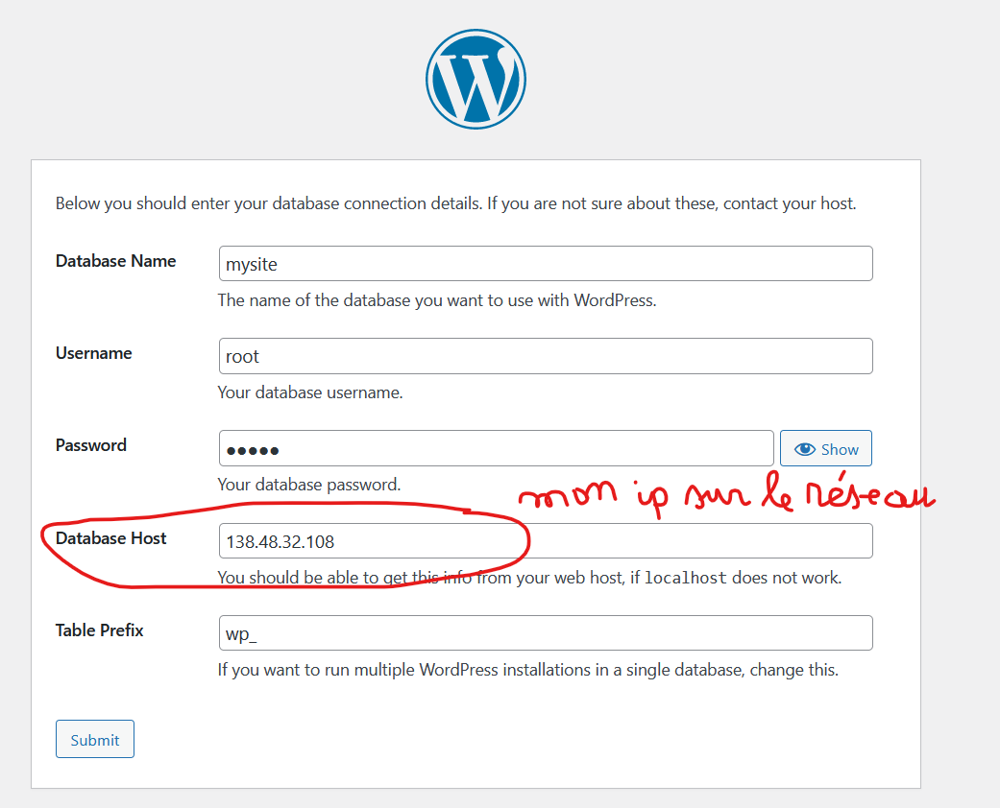

TP Docker¶
Objectif
A la fin de cette section, tu seras capable de déployer un site wordpress basé sur la technologie docker.
Contenu
Installation
Docker Desktop
I- Récupérer une image
II- Manipuler des conteneurs
III- Automatiser les services
IV- Persister les données
V- Contruire une image
VI- Publier une image sur le Hub
VII- Nettoyer les ressources orphelines
Installation¶
Questions
- Au cours de l'installation de docker, vous aviez dû (pour ceux qui sont sur Windows) permettre l'utilisation du client
Hyper-Ven activant lavirtualisation dans le BIOSou vous aviez dû installerWSL (Windows Subsystem for Linux). Quel en est l'utilité ? - Que savez-vous de
docker engineet dedocker deamon? - Quelle est la version de
dockerinstallé ? - Quelle est la version de
Docker Composeinstallé ?
Docker Desktop¶
Questions
- Lancez votre premier conteneur comme sur l'image. Quelles difficultés rencontrez-vous?
- Commentez les zones mis en évidence ?
- Quel est le nom du conteneur ?
- Que signifie les ports
8088:80?
Dans la suite du TP, nous allons essayer de lancer un site web wordpress dans un conteneur docker et en faire un sauvegarde sur notre hub. Pour y arriver, voici les grands axes du TP:
1) Récupérer une image de wordpress sur docker-hub
2) Installer la base de données et faire communiquer les conteneurs
3) Automatiser le démarrage et l'extinction des services avec Docker Compose
4) Créer son propre image et l'envoyer sur le hub
I- Récupérer une image¶
1) Récupérer une image de wordpress sur docker-hub
Dans cette section, nous allons récupérer une image de wordpress sur docker-hub. Allez sur docker-hub, et rechercher wordpress

Questions
- Commentez les zones mis en évidence ?
- Quelle est la commande pour récupérer l'image de wordpress ? Astuce (Aller dans le détail de l'image choisie)
Questions
- Pouvez-vous commenter les différentes zones de ce résultat ?
- Quelle est la version actuelle de wordpress ? Est-ce qu'il existe une image de docker dans cette version ?
- Que veut dire
alpine?
Dans la section suivante nous allons lancer un conteneur basé sur wordpress
II- Manipuler des conteneurs¶
Format des commandes de docker¶
-
Ancienne (Travaille toujours)
docker < command > [option] exemple : docker run --publish
-
Nouvelle
docker < command > < sub-command > [option]
exemple : docker container stop --publish
Lancer un conteneur¶
Questions
- Décrivez les composantes de la commande ci-dessus ?
Exécutez la commande suivante :


Questions
- Expliquez les parties mises en évidence ?
- Pourquoi la commande a t-elle échouée ?
Exécutons plutôt cette commande sans l'option --network:
Questions
- Pour quelle raison cette commande ne fonctionne-t-elle pas non plus ?
- Constatez la présence du conteneur dans
docker desktop. Quel est son état ?
Lancez le conteneur avec un autre nom:
Questions
- Que signifie l'identifiant mis en évidence ?
- L'
image dockera t-elle été téléchargée à nouveau ?
Vérifiez la disponibilité du site à l'adresse http://127.0.0.1:8080.
Voir les logs¶
Sur docker desktop, voir les logs du conteneur my-wordpress
Les logs d'un conteneur peuvent aussi être consultés avec la commande:
Supprimer un conteneur¶
Supprimer le conteneur qui ne fonctionne pas dans docker desktop.
Questions
- Quelle est la commande exécutée en arrière plan ?
- Les volumes associées aux conteneurs sont-elles persistées ?
Cela nous obligera à faire quelques réajustements. En effet, un conteneur de base de données, ne doit pas perdre ses données à chaque suppression.
Renommer un conteneur¶
Dans cette partie, nous allons renommer le conteneur my-wordpress en my-site
Warning
Avant d'exécuter la commande suivante, gardez en mémoire l'identifiant du conteneur.
Questions
Est ce que l'identifiant du conteneur renommé, a changé ?
Se connecter à un conteneur¶
Utilisation de docker desktop


Info
Tapez la commande bash après connection afin d'utiliser le Bourne-Again shell (bash) au lieu de Bourne Shell (sh)
En ligne de commande
Installer le package ascii
Inspecter un conteneur¶
Utilisez docker desktop pour inspecter. Nous pouvons voir que le conteneur à des paramètres réseaux.
Questions
- Quelle est l'
adresse ipdu conteneur et quel est lenetworkpar défaut ? Astuce (ce réseau est encore appelédocker0) - Quels sont les drivers qu'offre docker pour gérer un réseau de conteneurs ? Astuce (Documentation officielle)
- Sur votre machine, identifiez la carte réseau virtuelle créée par docker pour gérer le trafic des conteneurs ? Astuce (
ipconfigsous windows)
La commande suivante permet d'afficher la liste des réseaux disponibles :
Communication entre conteneurs¶
Legacy
L'utilisation de l'option --link pour lier les conteneurs est obsolète.
2) Installer la base de données et faire communiquer les conteneurs
La base de données n'étant pas encore disponible, nous ne pourrions pas poursuivre notre installation.

Nous allons devoir lancer un conteneur de base de données. Pour cela effectuer les tâches suivantes:
Première approche (bridge network)¶
La communication entre les conteneurs se fera depuis l'extérieur. Les deux conteneurs étant exposés sur des ports externes 8000 pour wordpress et 3306 pour mysql
A faire :
- Lancer un conteneur de base de données avec l'image
mysql:8.3.0en faisant attention à la documentation et aux ports à exposer. Dans notre cas, le port par défaut demysqlest3306et il doit être exposé à l'extérieur sur le même port. Vous pouvez définir votre mot de passe. Pour faire simple, je garderaiadmin.
Questions
- Dans quel cas le lancement du conteur échouera, au regard des ports ?
- Créer la base de données
mysiteen ligne de commande. C'est elle que nous utiliserons pour notre site.

- Continuer et achever l'installation en ajoutant les paramètres de connexion au conteneur de base de données.


Deuxième approche (host network)¶
Caractéristiques
- Pas d'isolation réseau entre le conteneur et l'hôte
- Pas besoin d'ip pour le conteneur
- Les conteneurs communiquent entre eux et avec l'
hôtemais ne sont pas accessible depuis l'extérieur. - Les conteneurs se comportent comme des processus de l'
hôte.
Mettons tout cela en évidence :

Questions
- Quelle compréhension avez-vous du
warningdans la capture ?
Attention
Vous auriez besoin de recréer la base de données car elle n'est pas persistée. C'est à dire elle a été perdue à la destruction du conteneur.
Ensuite ...
# Créer le conteneur de wordpress et le connecter au réseau `host`
docker run --name my-site --network host -d wordpress
Connectez vous au conteneur et exécuter la commande suivante:
Les conteneurs communiquent bien entre eux. Quid de la visibilité depuis l'extérieur ?
Sur votre machine, exécuter les commandes suivantes.
Questions
Que constatez-vous ?
La première approche avec bridge nous semble la plus appropriée pour ce cas d'exemple. Mais nous pouvons encore faire mieux en proposant une architecture notre site web est bien accessible depuis l'extérieur et fonctionnelle mais pas notre base de données.
Questions
Pouvez-vous dessiner une telle architecture ?
Troisième approche (custom network)¶
Nous allons exécuter les commandes suivantes après avoir détruit les conteneurs
Après ces commandes, lancer le lien http://localhost:8080. Vous devriez aboutir à une telle interface. Mettez db dans le champ Database Host

Questions
- D'où vient
db? - Quelle fonctionnalité de docker a été mis en évidence ? Astuce (Plus de détails...)
Tout fonctionne maintenant à merveille. Mais nous pouvons automatiser le démarrage et l'extinction de nos services avec Docker Compose. Rien de plus simple 😜
3) Automatiser le démarrage et l'extinction des services avec
Docker Compose
III- Automatiser les services¶
Créons un répertoire pour notre projet et créons un fichier particulier docker-compose.yml.
Bien sûr vous pouvez utiliser un autre nom pour le fichier mais il faudra le spécifier à docker. Nous ferons simple pour l'instant.
Ce fichier doit se trouver à la racine de votre projet.
Voici un exemple de contenu.
Questions
- Que veut dire
wordpress:latestet quel inconvénient il y a t-il à utiliser le taglatest? - Quelles sont les autres utilisations des volumes ?
Legacy
Dans les versions récentes de Docker Compose, la commande est en deux mots docker compose ... et non docker-compose ...
En ligne de commande, exécuter la commande suivante pour lancer les conteneurs:
# Contruire et lancer vos services
# Se base sur le fichier `docker-compose.yml` positionné dans
# le répertoire à partir duquel la commande est exécutée.
# -p|--project-name: pour mettre un prefixe aux ressources
# générées sinon `Docker Compose` gardera le nom du docker comme étant le préfixe
docker compose -p mysite up -d
Les volumes créés sont visibles dans Docker desktop
Docker Compose: commandes utiles
-
docker compose up -d: démarrer l'ensemble des services en arrière-plan; -
docker compose ps: voir le statut de l'ensemble de vos services; -
docker-compose stop: arrêter l'ensemble des services; -
docker-compose down: détruire l'ensemble des ressources; -
docker-compose config: valider la syntaxe de votre fichier docker-compose.yml
Finalisez l'installation de wordpress
Je sais que nous avions installer plus de mille fois la même application mais promis, ce sera la dernière 😅. Vous pouvez vous en rassurer avec la section suivante.
IV- Persister les données¶
Afin de tester la persistence des données, supprimer tout le stack avec la commande docker compose -p mysite down et relancer avec docker compose -p mysite up -d. Voyez si le site est toujours disponible et que vous n'êtes pas à une installation de wordpress.
A présent que nous savons automatiser la gestion du cycle de vie de nos services, nous personnaliser notre image wordpress afin d'inclure un fichier particulier phpinfo.php qui nous permettra d'observer les configurations du serveur web.
4) Créer son propre image et l'envoyer sur le hub
V- Construire une image¶
.dockerignore¶
Questions
.dockerignore est un fichier particulier de docker. Devinez à quoi il sert et quelle est son utilité ? Astuce (Importance de .dockerignore)
Dockerfile¶
Les instructions dans le fichier particulier Dockerfile permettre de construire son propre image en ajoutant quelques couches à l'image de wordpress:6.4.3-php8.1-apache.
Voici le contenu du Dockerfile. Il doit se trouver au même niveau que le docker-compose.yml
Créer un dossier www à la racine du projet. Nous allons synchronisé ce dossier avec le dossier /var/www/html présent dans le conteneur.
Aménagement du docker-compose pour prendre en compte le Dockerfile.
Questions
- La ligne
9n'est pas nécessaire. Pourquoi ?
Vous pouvez construire votre image Docker en exécutant la commande suivante dans le répertoire :
# Attention au `.` qui fait partie de la commande à exécuter
docker build -p mysite -t wp_phpinfo:1.0.0 .

Ensuite supprimer et redémarer les services
Accédez aux informations du serveur web avec http://localhost:8080/phpinfo.php
Aller plus loin avec Dockerfile
VI- Publier une image sur le hub¶
VII- Nettoyer les ressources orphelines¶
Docker par son activité peut rapidement télécharger beaucoup de volumes de données et certains conteneurs, images, réseaux, volumes peuvent restés orphelins. Il est utile dans certaines conditions de libérer les ressources non utilisées.
Il y a plusieurs commandes de maintenance, mais la plus complète est la suivante. Elle est à utiliser avec parcimonie
Allez plus loin
Déployez une application springboot avec docker? Astuce (Examples - Spring Boot application with Maven)